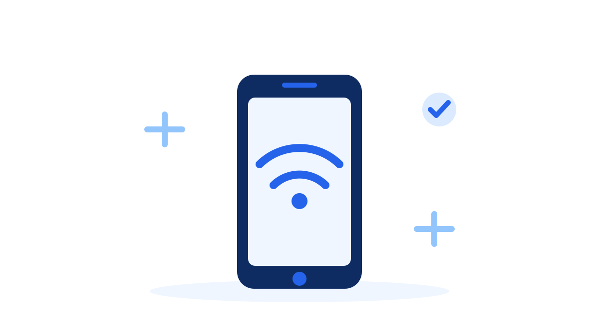

Como reclamar de uma operadora na Anatel
Página atualizada em 26/11/2026 · Revisão editorial LinkContasFilas de espera, cobrança indevida, internet que não funciona, cobrança após cancelamento: quando a operadora não resolve, quem resolve é a Anatel — a agência reguladora do setor de telecomunicações. O registro é gratuito e costuma dar resultado.
Neste artigo você vê quando vale reclamar na Anatel, o que fazer antes (para não perder tempo), como registrar a reclamação passo a passo e o que esperar dos prazos.

Escolha a sua empresa e vá direto ao site oficial dela.
Quando a Anatel pode ajudar
- Cobrança indevida ou após o cancelamento.
- Ativação ou portabilidade que demorou além do prazo legal.
- Bloqueio sem explicação ou cobrança de fidelidade abusiva.
- Sinal ruim não resolvido, cancelamento recusado, contrato não respeitado.
- Não atendimento no prazo de resposta da própria empresa.
A Anatel não resolve problemas de fatura de luz, água ou conteúdo de terceiros — para isso existe a concessionária e o Procon.
Antes de ir à Anatel: tente a empresa
A Anatel trabalha melhor quando você mostra que tentou antes. Faça e guarde:
- Reclamação no atendimento da operadora (site, aplicativo ou SAC) — anote o número de protocolo.
- Prazo de resposta: em geral 5 dias úteis (10 para serviços complexos). Espere, se puder.
- Evidências: prints da tela, faturas, contrato, datas e nomes de quem atendeu.
Já tentou tudo e nada? É hora da Anatel. (Dica: protocolos da própria empresa aceleram muito a análise.)
Passo a passo para registrar a reclamação
- Acesse o site oficial da Anatel (digite "Anatel" no Google e confira o endereço; desconfie de sites parecidos).
- Procure por Consumidor → Registrar reclamação (Central de Atendimento ao Consumidor — SAC Digital).
- Informe seus dados, a operadora e o tipo de serviço (telefone, celular, internet, TV).
- Descreva o problema com datas, valores e protocolos. Seja objetivo: o que aconteceu, o que você pediu e o que a empresa disse.
- Anexe as provas (prints e faturas).
- Envie e guarde o número da reclamação.
Atenção: a Anatel pode pedir seu CPF e dados do contrato — use apenas o site oficial.
Prazos: quanto tempo leva?
Após o registro, a Anatel notifica a operadora e ela tem prazo para responder (costuma ser de 10 a 15 dias, variando). Você acompanha o andamento pelo número da reclamação. Se a resposta não resolver, há etapa de análise da própria Anatel.
Enquanto isso, não espere para usar seus direitos: por exemplo, em cancelamento você pode exigir o cancelamento imediato conforme a regra da fidelidade — veja como cancelar a internet e como cancelar o plano de celular.
Outros canais que ajudam junto
- Procon / juizado: para valores e danos morais, o caminho é o Procon ou o Juizado Cível (pequenas causas).
- Reclame Aqui / SPC / Consumidor.gov.br: registros públicos que as empresas costumam responder.
- Portabilidade e fidelidade: conheça como trocar de operadora levando o número antes de reclamar — em muitos casos a troca resolve mais rápido.
Existe "Anatel" falsa? Existe. Golpistas cobram por "abrir reclamação na Anatel" ou pedem dados bancários. O registro é gratuito e feito só nos canais oficiais da agência.
Veja também
- Como cancelar o plano de celular
- Como cancelar a internet sem dor de cabeça
- Portabilidade: trocar de operadora
- Internet lenta? O que fazer
- Todos os artigos do LinkContas
- Perguntas frequentes do site
Perguntas frequentes
Registrar reclamação na Anatel é pago?
Não, é totalmente gratuito. Desconfie de qualquer site ou pessoa que cobre para "abrir na Anatel" — é golpe.
Em quanto tempo a operadora responde?
Após a Anatel notificar, o prazo costuma ser de 10 a 15 dias. Você acompanha pelo número da reclamação informado no envio.
Preciso tentar com a empresa antes?
É fortemente recomendado: ter protocolo da operadora deixa a análise mais rápida e demonstra que você tentou resolver. Sem protocolo, a Anatel ainda aceita, mas pode demorar mais.
A Anatel resolve problema de conta de luz?
Não. Telecomunicações (telefone, internet, TV) são da Anatel; energia e água são de outra natureza — use o atendimento da concessionária e, se preciso, o Procon.
O que fazer se a cobrança continua depois do cancelamento?
Guarde o comprovante do cancelamento e o protocolo, registre reclamação na Anatel e, se persistir, abra registro no Procon e negocie o acerto. Não pague o que não é seu sem contestar.
Fontes oficiais
Este guia foi conferido com base nas regras e canais oficiais do setor:
- ANATEL — agência reguladora de telecomunicações
- Portal do Consumidor — direitos e canais de atendimento
- Consumidor.gov.br — canal oficial de reclamações
As regras do setor mudam com o tempo: confira sempre a data de verificação no topo desta página e, em caso de dúvida, use os canais oficiais acima.